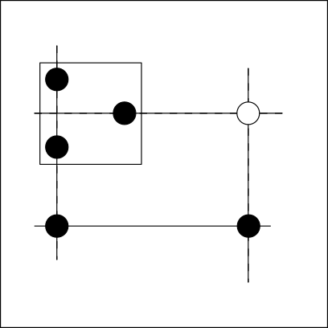
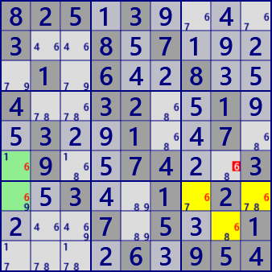

EmptyRectangle
For the description of EmptyRectangle, use cell-to-cell link and
ConnectedCells.
The following figure shows a block(□) of EmptyRectangle, a cell arrangement(●) in the block,
and a relationship pattern (solid line: strong link, dashed line: weak link).
If the cell(○) is true, due to a direct relationship and a strong link,
any cells(●) in the block will be false.

The analysis algorithm of EmptyRectangle is as shown in the above figure.,
- Select digit.
- Select block.
- Selecte the cell that becomes the axis in the block.
- Confirm that ER can be created in the block except for row and column of axis cell.
- Look for strong links outside the block.
- Find the cell in the axis of the block, the position forming a rectangle with the strong link.
Here is an example of EmptyRectangle. All different EmptyRectangles on the same scene of the same puzzle.
The bottom center is the same scene of the same puzzle, but the algorithm applied is Skyscraper.
Although applying different algorithms, candidates are excluded in the same cell as the upper center.





825.3....3..8.7....1.6..8..4..32..1..3..1..7..9..74..3..3..1.2....7.5..1....6.954